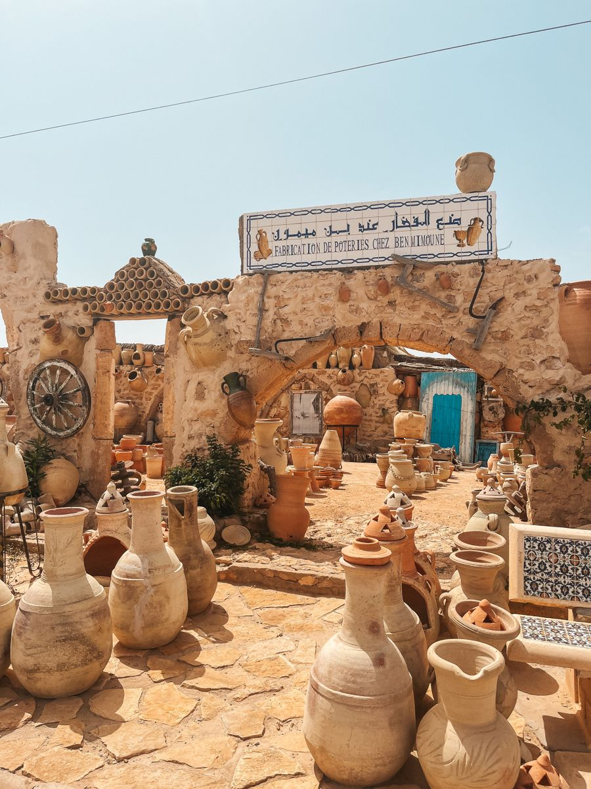

ÎLE DE DJERBA · TUNISIE
Une île,
Une île,
mille histoires.
Entre Méditerranée, traditions et héritage culturel, découvrez l'identité unique de Djerba.
DÉCOUVRIR L'ÎLE
34° N · 10° E
EXPLORER DJERBA ↓
BIENVENUE À DJERBA
Bien plus qu'une destination touristique.
Située au sud-est de la Tunisie, Djerba est une île méditerranéenne reconnue pour la richesse de son patrimoine naturel, historique et culturel.
Son architecture traditionnelle, ses traditions et ses savoir-faire témoignent d'une identité façonnée au fil des siècles.
Découvrir son histoire →
UN PATRIMOINE EXCEPTIONNEL
Explorez les richesses de l'île.
Découvrez les différentes dimensions du patrimoine djerbien.
